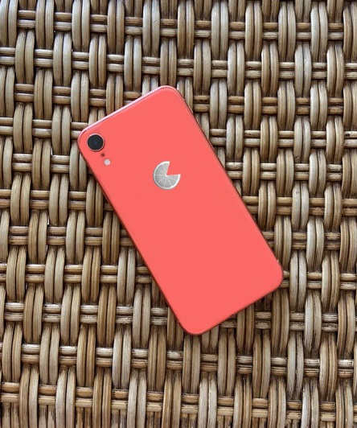

Desenvolvido com alta tecnologia, a linha iFruit chagou para revolucionar o mercado de smartphones.
Utilizando a nova família de chipsets Thunder 7, os novos iFruit são a escolha perfeita para quem procura
agilidade no dia a dia.
Com o objetivo de melhorar o controle da saúde de nossos usuários, TODOS os iFruit 5°Gen, incluem os apps: iNutri e iGym

iFruit XR: até 3x mais rápido que um celular comum
O novo iFruit XR, vem com a proposta de ser o melhor entre os melhores, com um design íncrivel,
e chipset de última geração, esse celular faz qualquer maçã chorar
Específicações:
- Armazenamento: 64GB
- Memória RAM: 8GB
- Chipset: Thunder 5.1
- Câmera Traseira: 16MP Fx 2.0
- Câmera Frontal: 8MP Fx 1.6
- Tela: IPS 75Hz
iFruit XS: Porque travar não é uma opção
O iFruit XS dispensa apresentações, com um design elegante e
um sistema otimizado, essa é a opção perfeita para quem odeia ficar parado!
Específicações:
- Armazenamento: 128GB
- Memória RAM: 8GB
- Chipset: Thunder 5.2 with Neural Engine
- Câmera Frontal: 12MP Fx 1.6
- Câmera Traseira:
12MP Fx 2.0
MP Fx 1.6
- Tela: OLED 90Hz

iFruit X Pro: O Melhor entre os melhores
O iFruit X Pro chegou ao mercado para ser o melhor entre todos os smartphones da atualidade, com um hardware poderoso, um design refinado, o iFruit X Pro é perfeito para quem procura uma experiência premium
Específicações:
- Armazenamento: 256GB
- Memória RAM: 16GB
- Chipset: Thunder 5.3 with Neural Engine 2.0
- Câmera Frontal: 16MP Fx 2.0
- Câmera Traseira:
48MP Fx 2.3
12MP Fz 1.8
8 MP Fx 1.6 - Macro
- Tela: Super AMOLED 120Hz